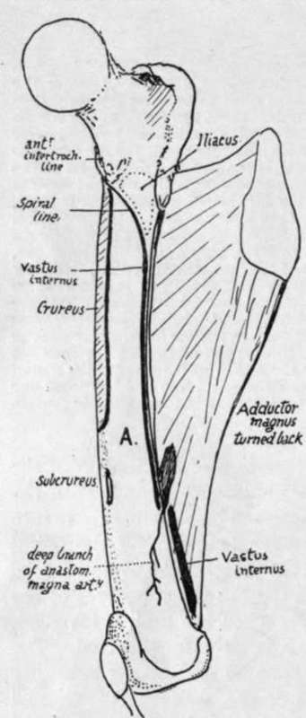
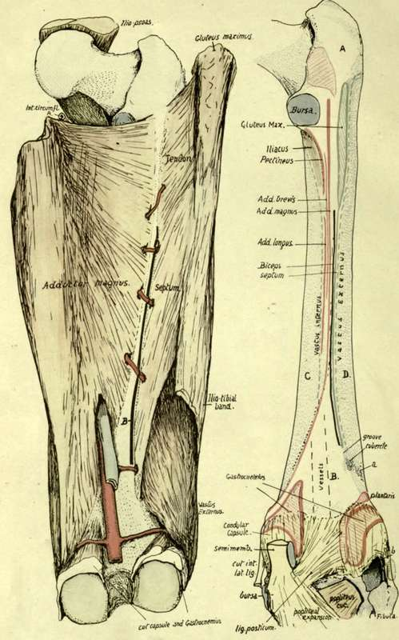
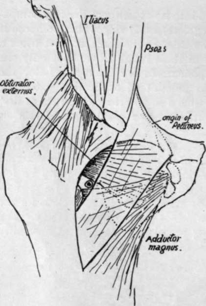

Region Of Linea Aspera
Description
This section is from the book "The Anatomy Of The Human Skeleton", by J. Ernest Frazer. Also available from Amazon: The anatomy of the human skeleton.
Region Of Linea Aspera
Examine and compare the gluteal ridge in different bones : in some it is a prominent crest, in others only a broad rough area, and in others again it is represented by a rough fossa (fossa hypo-trochanterica), or these different aspects may be more or less combined in one specimen. Rarely there may be a traction epiphysis forming a prominent crest, as is normally found in the femora of speedy animals such as the horse and deer. When such a centre develops in man it appears about the age of twenty-one and joins in a few years.
Fig. 119.-Right femur from the inner side, with Adductor magnus turned back to show the linear origin of Vastus internus from spiral line, inner lip of linea aspera and tendon of magnus. Thus the muscle lies on inner surface, A., of shaft, but does not arise from it. Notice the extent of Crureus, the origin of Subcrureus, and the plane of the deep branch of the anast. magna artery.
Fig. i 20.-Posterior aspect of right femur to show linea aspera, etc. The left figure shows how the external intermuscular septum reaches the bone, being continuous above with the tendon of Gluteus maximus, and below this with the deep aspect of the ilio-tibial band. It separates Vastus externus from the short head of Biceps, which is indicated by the thick black line (H-) between the septum and Adductor magnus : observe that the septum is pierced close to its lower end by a muscular artery, and that the Biceps is not (as a rule) so pierced. On the back of the bone (right figure) a small tubercle marks the end of the line of the septum, which runs up to the Gluteal ridge, and a groove marks the position of the piercing artery and hence the lower end of the origin of Biceps ; the little tubercle is not to be confounded with a rough spot (a) due to aponeurotic fibres in Vastus externus. The remainder of the linea aspera is seen analysed into the districts into which the tendons are inserted which are responsible for its formation, and on each side of it the origins of the two Vasti are shown as interrupted lines ; in its lower part (dotted) the Vastus internus arises from the tendon of Adductor magnus, and not from the bone. Other areas on the posterior aspect of the bone are : A, covered by Gluteus maximus ; B, popliteal surface, in relation with vessels and popliteal fat; C and D, covered by Vastus internus and externus respectively. In the upper part of the left figure the Ilio-Psoas is seen in position, showing how the internal circumflex artery is kept away from the bone by it (compare with Fig. 121). The lower end of the bone has the origins of Gastrocnemius marked out ; observe how much of each head and of Plantaris arises from the condylar capsule. The condylar capsules cover in the condylar recesses of the joint, and the interval between them is occupied by the crucial ligaments ; in the figure, however, these have been covered in by the lig. posticum which is really an expansion from tendon of Semimembranosus. The cut tendon is shown, lying against the condylar capsule, having first crossed part of the origin of inner head of Gastrocnemius. The inner head comes down to the inner side of the tendon, so that a bursa is necessary between them, and this must lie on the capsule, through which it sometimes reaches the joint cavity. Semimembranosus expands at its insertion and its front fibres pass under the internal lateral ligament, a bursa intervening. Tendon of Popliteus comes through the outer and back part of the outer capsule (6), deep to the ext. lat. lig. ; the latter is covered by tendon of Biceps, with a small bursa interposed.
The gluteal ridge marks the direct tendon of Gluteus maximus, but an expansion downwards from this tendon forms the external intermuscular septum (Fig. 120), so that the line of this septum on the bone is a direct continuation of the ridge and passes between the short head of Biceps internally and origin of Vastus externus on the outer side.
The linea aspera can be more or less analysed into its constituent lines by comparison of various bones with each other. The irregularly-fused ridges that compose it are purely secondary lines situated on a primary border of the shaft, so that when a young bone is examined there is no appearance of these rough ridges, but only the rounded border of the bone, into which the aponeuroses are inserted. Later the attached aponeurotic structures have a certain amount of ossification extending into them from the periosteum, and at the same time a small artery that runs at first between the aponeuroses is by this means taken into the new-formed ridges and makes the vascular canal found in this region.
Analysis of the linea aspera places its attachments as follows (Fig. 120) : External intermuscular septum from gluteal ridge to a small ill-defined tubercle on the external supracondylar ridge : run the finger down this ridge and the tubercle will be felt some 2 to 3 inches above the condyle, more marked from the presence of a shallow groove just above it. The groove is for a muscular artery, and the tubercle is for the attachment of the lowest fibres of the septum, which is pierced by the artery. The tubercle is not to be confounded with a marking occasionally present at a slightly lower level and more externally, made by the fascia of Vastus externus.
Short head of Biceps is just internal to the line of the septum, extending from the gluteal ridge to the slight groove above the tubercle, for the artery runs below the origin of Biceps, though it pierces the septum. Sometimes the origin is prolonged a little upwards, in which case it must of course run internal to the gluteal ridge. Adductor magnus extends as high as the level of the top of the small trochanter, but occasionally falls short of this : it extends down to the Adductor tubercle, and as a rule no definite indication of the situation of the femoral opening can be found, for the tendinous structure is continued on the bone deep to the vessels. The upper fibres are those arising from the pubis, and by articulating the bones it is seen that they are nearly horizontal in direction and must pass behind the small trochanter, whence the necessity for a bursa on its posterior aspect.
Adductor brevis lies between the Magnus and the Longus and Pectineus, and can be placed more easily if these last two are first put into position. Pectineus is inserted by aponeurosis into the lower part of the small trochanter and the line leading down from it to the linea aspera for about 2 inches or more : Adductor longus is on the continuation of this line, occupying the middle third of the length of the shaft. Adductor brevis can now be placed just outside this line, extending, roughly, about half-way up the level of Pectineus and half-way down that of Longus. Notice that the upper ends of the gluteal ridge and the Adductor magnus insertion and the base of the great trochanter and upper end of small trochanter are all about on the same level: from this it can be understood that the transverse branch of .the external circumflex artery, running round the base of the great trochanter, can pass just above the gluteal insertion, and is on the same level as the internal circumflex, which appears above the Adductor magnus but not close to the bone, because it is internal to the Psoas tendon (Fig. 120).
Fig. 121.-Scheme to show the course of the internal circumflex artery. Pectineus is represented as transparent, lying on Obturator externus and upper fibres of Adductor magnus. Upper part of Add. brevis comes in between them, but is too low to be in direct relation with the artery. The artery runs back in the small interval in which it is seen below the capsule and Obt. externus, above or external to Pectineus and Add. magnus; this interval is covered by Psoas, and the vessels reach it by passing back between Psoas and Pectineus, internal to the former.
The course of the internal circumflex can be understood by articulating the bones and putting the muscles into position on them, as shown in Fig. 121. It is seen to turn back internal to the Psoas and reach the interval above the mass of the Adductors and below the capsule and Obturator externus, and therefore appears behind above the Adductor magnus and below the Quadratus femoris (which covers the Obturator externus behind).
The perforating arteries (Fig. 120) lie close to the bone, so that they run a very short course before breaking up in the substance of Vastus externus. They pierce the various aponeurotic planes attached to the linea aspera, and give branches to the muscles, etc., between these planes. The first pierces Adductor brevis and magnus and tendon of Gluteus maximus ; the second goes through brevis, magnus, Biceps, external septum ; the third and fourth do the same, except that they do not. pierce brevis. Occasionally the first may go through the lower part of Pectineus before piercing Adductor brevis.
Continue to:
- prev: The Shaft
- Table of Contents
- next: Lower End